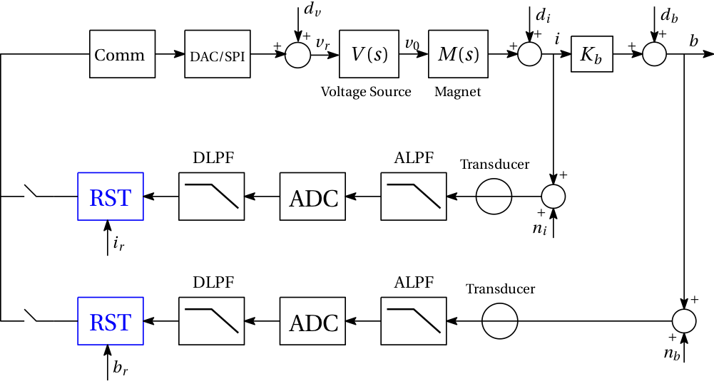

Current/Field Control¶
The FGC can implement two types of control methods for the current and field loops. One is the standard RST controller which is used for general (non-repetitive) cycles. Some of the theory behind the RST synthesis for power converters has already been addressed. It is thus recommended that the user consults this document before continuing to read any further (as the theory presented here will be a brief extension of that content).
The second type of control method used is Iterative Learning Control (ILC). This method can only be run when the FGC is in cycling mode. This is because ILC requires repetitive cycles to “learn” the required reference signal in order to produce zero error between the output and the desired output. More information on the ILC methodology can be found here; information on the architecture of ILC within the FGC can be found here. Note that to run ILC, a stabilizing RST controller needs to be set in the device.
PyFresco synthesizes both the RST and ILC filters for a particular loop. Both of these control methods are discussed in detail below.
For the remaining portions of this documentation, the notation \(\mathcal{S}_{xy}\) will be used to represent the sensitivity function from a signal \(x\) to a signal \(y\). For all controller designs within the FGC, the desired closed-loop transfer function (technically the complementary sensitivity function) is selected as a (delayed) standard second-order system:
where \(r\) is the input reference, \(y\) is the output, \(\zeta \:\) is the desired damping factor, \(d_r\) is the desired reference delay and
where \(f_{d}\) [Hz] is the desired closed-loop bandwidth of the system. Note that \(r\) or \(y\) can be either the current or field (depending on the loop the user wants to regulate).
RST Synthesis¶

Fig. 1 RST controller structure for the current and field loop. The voltage disturbance \(d_{v}\) is depicted here at the input of the voltage source; this is done on purpose for uniformity in the case of data driven design where only the series \(V(s)M(s)\) can be measured. This assumption has no relevant consequences though as \(V(s)\) is assumed to have unity gain and \(M(s)\) is assumed to be always slower than \(V(s)\).¶
Fig. 1 shows the general power converter control system configuration. In a model-driven setting, the voltage source and magnet dynamics \(V(s)\) and \(M(s)\) (along with the other components) are approximated by using the FGC property values. In a data-driven setting, the open-loop dynamics can be measured using the FRM tool (see XXX for more information). Let us denote \(G(s)\) as the system corresponding to the open-loop dynamics (DAC/SPI, voltage source, magnet, and feedback elements), and \(G_{f}(s)\) as the system corresponding to the dynamics in the forward path (DAC/SPI, voltage source and magnet). Note that \(G(s)\) includes the moving average filter dynamics given by the FGC property MEAS.I/B.FIR_LENGTHS.
The RST controller is a 2-degree-of-freedom controller which can be used to synthesize the tracking and regulation requirements independently from each other. Each controller is realized as a polynomial function as follows:
where \(\{n_r,n_s,n_t\}\) [n_r, n_s, n_t] are the orders of the polynomials \(R,S\) and \(T\), respectively. For notation purposes, the \(z^{-1}\) term will only be reiterated when deemed necessary. The controller parameter vector \(\rho \in \mathbb{R}^{n_{rst}}\) (vector of decision variables) is defined as
With PyFresco, \(\rho\) can be obtained by minimizing either the \(\mathcal{H}_\infty\), \(\mathcal{H}_2\) and \(\mathcal{H}_1\) criterion. The methodology behind these criteria is outlined below.
Initial stabilizing controller¶
To successfully design a stabilizing low-order RST controller, the design methodology requires an initial stabilizing controller \(R(\rho_0)\) and \(S(\rho_0)\) (where the index \(i\) denotes initial). In general, the performance of this initial controller need not be close to the performance of the final controller; however, experimentation shows that a better initial controller will reduce the overall optimization time of the algorithm. For the CERN power converter control system, there are several constraints that are imposed to improve the controller performance and system robustness; the following \(\mathcal{H}_\infty\) minimization problem can be considered to produce the initial controller:
where \(W = (1-\mathcal{S}_{ry}^d)^{-1}\) and \(\Omega := [0,\pi/T_s]\). The first constraint ensures that the desired modulus margin is obtained (where \(\Delta M_{ib}\) is the modulus margin). The second constraint ensures that the desired noise attenuation of \(A_k\) [-] on \(|\mathcal{S}_{d_v y}^k|\) is obtained; the subscript \(k\) denotes the k-th index of a frequency vector. The third constraint ensures the stability of the open-loop controller. Note that \(S(\rho_0)\) contains \(n_I\) [n_integrators] integrators that can be set by the user. As it stands, this problem is non-convex and the solution does not guarantee the stability of the initial controller. However, this problem can be convexified as follows:
where \(\psi(\rho_0) = GR(\rho_0) + S(\rho_0)\). The classical solution to this problem is to implement a bisection algorithm in order to obtain the global solution.
For a model-driven design, the optimization problem is solved in a semi-definite programming (SDP) approach where a frequency array of finite values is defined a-priori. PyFresco contains an algorithm that automatically calculates this array.
For a data-driven design, the same SDP approach is taken. However, the frequency array does not need to be arbitrarily constructed (as in the model-driven design) since the frequency values from the FRM experiments are already available with the corresponding gain and phase values.
A feasible solution to (1) ensures the stability of the closed-loop system, and thus produces stabilizing (initial) controllers. With PyFresco, the initial order for all RST polynomials are selected as \(n_r=n_s=n_t=5\). If the problem is infeasible for this order, then the PyFresco algorithm will increase the order until feasibility is achieved.
Note that if \(d_r\) is set too large (greater than the open-loop delay), the \(T(z^{-1})\) polynomial may contain unstable zeros (which is not desired since the FGC control loop implements back-calculations needed for anti wind-up control). If this instability in \(T(z^{-1})\) occurs, PyFresco will re-optimize and add the constraint \(\Re\{T(\rho_0)\} > 0\) to the optimization problem (and to the \(\mathcal{H}_\infty, \mathcal{H}_2\) and \(\mathcal{H}_1\) optimization problems discussed below); this constraint is a sufficient condition to ensure that the zeros of \(T(z^{-1})\) remain inside the unit circle. Note that this additional constraint may impact the final performance of the controller. It is thus recommended to modify \(d_r\) only if the open-loop delay of the system is (approximately) known.
In summary, here is the basic PyFresco RST synthesis methodology:
Implement the stabilizing method to design a large order controller (where no initialization is needed and the controllers are stabilizing). The optimization constraints will automatically be modified based on the solutions obtained.
Use the controller in the previous step as the initialization for the low-order optimization problem (which ensures the closed-loop stability and performance for low-order controllers).
The second step to this problem is now addressed below. It is now assumed that the initial stabilizing polynomials \(R(\rho_0)\) and \(S(\rho_0)\) are available.
\(\mathcal{H}_\infty\) control¶
In the \(\mathcal{H}_\infty\) sense, the objective is to minimize \(\|W(1 - \mathcal{S}_{ry}(\rho)) \|_\infty\); an equivalent representation of this objective is to minimize \(\gamma\) such that \(\|W(1 - \mathcal{S}_{ry}) \|_\infty^2 < \gamma\) (which is the epigraph form of the minimization criterion). This criterion is satisfied if the following optimization problem is considered:
where \((\cdot)^\star\) denotes the complex conjugate of the argument. The constraint in the above optimization problem can be expressed as
where \(\psi(\rho) = GR(\rho) + S(\rho)\). This constraint is convex-concave (due to the \(- \psi^{\star}(\rho)\psi(\rho)\) term). To convexify this constraint, the term \(\psi^{\star}(\rho)\psi(\rho)\) can be linearized around an initial controller parameter vector \(\rho_0\). With the Shur Complement Lemma, the optimization problem can be transformed to a linear matrix inequality (LMI). However, large LMI’s are not solved efficiently with Python. Thus the optimization constraint is left in its linear form; the final optimization problem to solve (with the additional modulus margin and controller stability constraint) can be expressed as follows:
where \(\psi(\rho_0) = GR(\rho_0) + S(\rho_0)\). For a stabilizing RST controller, \(R(\rho_0)\) and \(S(\rho_0)\) must be stabilizing. For a fixed \(\gamma\), this optimization problem is convex. Thus the optimal solution can be obtained by performing a bisection algorithm 1 over \(\gamma\). This optimal solution, however, is the solution for one iteration of a given \(\psi(\rho_0)\). The converged true local solution can be obtained by solving the above optimization problem and replace \(\psi(\rho_0)\) with the solution of the previous problem. The final solution is then obtained within a given tolerance level of \(\gamma\).
Here is a basic summary of the optimization process for \(\mathcal{H}_\infty\) performance:
Obtain an initial stabilizing controller \(R(\rho_0)\) and \(S(\rho_0)\) from the convex optimization problem in (1).
Use this solution as the initializing controller in \(\psi(\rho_0)\) (i.e., \(\psi(\rho_0) = GR(\rho_0) + S(\rho_0)\)).
Solve the optimization problem in (2) using a bisection algorithm. Use the solution as the new \(\psi(\rho_0)\).
Repeat the above step until convergence is achieved with respect to \(\gamma\).
\(\mathcal{H}_2\) control¶
A similar linearization process can be used to obtain \(\mathcal{H}_2\) performance. An optimization problem can be formulated for minimizing the square of the \(\mathcal{H}_2\) model-reference objective (i.e., minimizing \(\|W_2(\mathcal{S}_{ry}(\rho) - \mathcal{S}_{ry}^d) \|_2^2\)); the optimization problem for this criteria can be expressed as follows:
where \(\Gamma(\omega) \in \mathbb{R}_+\) is an unknown function of \(\omega\) and \(W_2 = 2 \pi \cdot\) des_bw \(\cdot s^{-1}\). By using the Shur complement lemma, the above problem can be transformed into an LMI. Note that in contrast to the \(\mathcal{H}_\infty\) problem above, we cannot leave this problem in linear form and solve it with a bisection algorithm because \(\gamma\) here is a variable function, not simply a constant. Thus we are forced to use the LMI method to solve the problem. With the added modulus margin and controller stability constraint, the \(\mathcal{H}_2\) optimization problem to solve is given as follows:
where \(\psi_0 = \psi(\rho_0)\). With PyFresco, the constraints are evaluated at a finite number of frequencies (i.e., \(\omega \in \Omega_\eta=\{ \omega_1,\ldots,\omega_\eta \}\)), thus \(\Gamma(\omega)\) can be replaced by an optimization variable \(\Gamma_k\) at each frequency \(\omega_k\) for \(k=1,\ldots,\eta\). To better approximate the integral function, a trapezoidal approximation of the objective function is used, i.e., \(\gamma \approx \sum_{k=1}^{\eta} \left(\frac{\Gamma_{k} + \Gamma_{k+1}}{2}\right)(\omega_{k+1} - \omega_{k})\).
Here is a basic summary of the optimization process for \(\mathcal{H}_2\) performance:
Obtain an initial stabilizing controller \(R(\rho_0)\) and \(S(\rho_0)\) from the convex optimization problem in (1).
Use this solution as the initializing controller in \(\psi(\rho_0)\) (i.e., \(\psi(\rho_0) = GR(\rho_0) + S(\rho_0)\)).
Solve the optimization problem in (3). Use the solution as the new \(\psi(\rho_0)\).
Repeat the above step until convergence (within a fixed tolerance) is achieved with respect to \(\gamma\).
\(\mathcal{H}_1\) control¶
In some applications, minimizing the \(\mathcal{H}_1\) norm of the model-reference objective may be desired. This is because for a given bounded discrete-time signal \(x[k]\), and its frequency response \(X(e^{j\omega T_s})\), the relationship between \(\| X \|_1\) and \(\| x \|_\infty\) is given as \(\|x \|_\infty \leq \| X\|_1\). Therefore, if one is interested in minimizing the peak error between the output and desired output (i.e., minimize \(\| y[k] - y_d[k]\|_\infty\)) in the time-domain, then minimizing \(\|W_2(\mathcal{S}_{ry}(\rho) - \mathcal{S}_{ry}^d) \|_1\) can be considered.
Unlike the \(\mathcal{H}_\infty\) and \(\mathcal{H}_2\) algorithms, the \(\mathcal{H}_1\) minimization problem is handled in two steps. This is because the \(\mathcal{H}_1\) problem cannot easily be linearized to obtain convex constraints. In the first step, a simple feasibility problem is solved to stabilize the closed-loop system, stabilize the open-loop controller, and obtain a desired modulus margin:
Note that a feasible solution to this problem generates \(R(\rho^*)\) and \(S(\rho^*)\) (i.e., there is no \(T\) polynomial to optimize in the above problem). The remaining polynomial to compute is \(T(\rho)\) in order to obtain the desired tracking preformance; this polynomial is computed by solving the following optimization problem:
where \(G_fT(\rho)[GR(\rho^*) + S(\rho^*) ]^{-1}\). Note that the \(\mathcal{H}_1\) optimization method does not require an initial stabilizing controller to achieve the desired performance. However, because the \(R\) and \(S\) polynomials are computed separately from \(T\), a larger \(n_t\) is typically needed to achieve satisfactory performance.
Performance Evaluation¶
Once PyFresco completes the RST optimization (for either \(\mathcal{H}_\infty\), \(\mathcal{H}_2\) or \(\mathcal{H}_1\) control), the question now remains, how can the performance of the controller be evaluated? The optimal solution for each optimization method can be used for this purpose; these optimal solutions are computed as follows:
\(\mathcal{H}_\infty\) control:
\[\begin{split}\begin{aligned} \gamma_\infty^* &= \sup_{\omega \in \Omega} |X_\infty(e^{-j\omega T_s})| \\ X_\infty &= W(1 - \mathcal{S}_{ry}(\rho^*)) \end{aligned}\end{split}\]\(\mathcal{H}_2\) control:
\[\begin{split}\begin{aligned} \gamma_2^* &= \sqrt{\frac{T_s}{2\pi} \int_{- \pi/T_s}^{\pi/T_s} \left|X_2(e^{-j\omega T_s}) \right|^2 \: d\omega} \\ X_2 &= W_2(\mathcal{S}_{ry}(\rho^*) - \mathcal{S}_{ry}^d) \end{aligned}\end{split}\]\(\mathcal{H}_1\) control:
\[\begin{split}\begin{aligned} \gamma_1^* &= \frac{T_s}{2\pi} \int_{- \pi/T_s}^{\pi/T_s} |X_1(e^{-j\omega T_s})| \: d\omega \\ X_1 &= W_2(\mathcal{S}_{ry}(\rho^*) - \mathcal{S}_{ry}^d) \end{aligned}\end{split}\]
PyFresco displays these optimal solutions at the end of each optimization session. Note that the displayed optimal solution is an approximation to the true solution (since the frequency vector \(\omega\) is discrete and finite). Table 1 shows a table which depicts a basic “rule of thumb” for evaluating the RST controller performance for each optimization method.
\(\mathcal{H}_\infty\) |
\(\mathcal{H}_1 / \mathcal{H}_2\) |
|
|---|---|---|
Good |
\([0,1.3)\) |
\([0,0.15)\) |
Satisfactory |
\([1.3,1.8)\) |
\(-\) |
Bad |
\([1.8,\infty)\) |
\([0.15,\infty)\) |
Below is a general interpretation of each control method and when to implement them:
Use \(\mathcal{H}_\infty\) control for general control demands. The \(\mathcal{H}_\infty\) control method is the most common and general optimization criterion. A simple interpretation of minimizing the \(\mathcal{H}_\infty\) criterion is to minimize \(\gamma\) such that \(|E|\gamma^{-1} < |E_d|\) for all \(\omega \in \Omega\) (where \(E\) and \(E_d\) are the error and desired error transfer functions, respectively). From this condition, it can be observed that minimizing the \(\mathcal{H}_\infty\) criterion is equivalent to shaping \(|E|\) as close as possible to \(|E_d|\) over all frequencies. The solution to this problem generally yields satisfactory performance.
Use \(\mathcal{H}_2\) control when it is desired to minimize the average (time-domain) error. This is due to the fact that \(\|x[k] \|_2 \propto \|X(e^{-j\omega T_s}) \|_2\) (i.e., from Parsavel’s theorem); this implies that minimizing the \(\mathcal{H}_2\) criterion of the model reference objective in (3) is equivalent to minimizing \(\| (r[k] - y[k]) (r[k] - y_d[k])^{-1}\|_2\), (i.e., the weighted average error), where \(r[k], y[k], y_d[k]\) are the time-domain reference, output, and desired output signals, respectively.
Use \(\mathcal{H}_1\) control when it is desired to minimize the peak (time-domain) error. This is due to the fact that \(\|x[k] \|_\infty \leq \|X(e^{-j\omega T_s}) \|_1\) (as explained in the previous section).
ILC Synthesis¶

Fig. 2 A basic block diagram of the ILC structure used for power converters.¶
The ILC structure used for the CERN power converters is shown in Fig. 2. ILC seeks to address the tracking problem by implementing a learning algorithm where the desired performance is achieved by incorporating past error information into the control structure. The control signal (or reference signal in the case of closed-loop control) is modified to attain a desired specification; with ILC, systems that perform the same operations (i.e., repetitive tracking specifications) under the same operating conditions are considered. Given a real-valued signal \(x(k)\) with a time index \(k\), the symbol \(q\) will denote the forward time-shift operator such that \(qx(k) \equiv x(k+1)\). The output of the closed-loop control system can be expressed as follows:
where \(l\) is the ILC iteration sequence, \(y_l(k)\) is the output, \(y_d(k)\) is the desired output, and \(r_l(k)\) is the reference signal that is modified by the ILC algorithm in order to acquire the desired output response. The transfer operator \(\mathcal{S}_1(q)\) is assumed to be stable (i.e., a stabilizing RST controller is set).
Let us denote the error of the ILC closed-loop system as \(e_l(k) \triangleq y_d(k)-y_l(k)\); the first-order ILC algorithm can then be expressed as
where \(Q(q)\) and \(L(q)\) are known as the Q-filter and learning filter, respectively. The question now remains, how can the Q-filter and learning function be designed to produce the best tracking performance? It can be shown that if
then the update equation in (4) will produce an output \(y_l(k)\) that is asymptotically stable.
The Q-filter can generally be set as a simply low-pass filter with a particular bandwidth (and unity gain). The bandwidth represents the frequency at which the ILC algorithm is no longer active. Thus frequencies above the Q-filter bandwidth are not tracked. However, setting a bandwidth too large will reduce the system robustness to uncertainties from \(\mathcal{S}_{ry}\). Thus there is a trade-off between robustness and tracking performance.
The FGC cannot implement an IIR low-pass for the Q-filter. Thus an FIR is used to approximate the IIR response. PyFresco parameterizes the filters as follows:
where \(n_l\) [n_ilc] and \(n_q\) [n_q] represent the orders of the filters. Note that the Q-filter is symmetric (to produce zero-phase filtering). Given this parameterization, the following optimization can be constructed:
Any feasible solution will guarantee the asymptotically stability of the ILC algorithm. However, the above optimization is non-convex (which causes computational problems).
Q-Filter Optimization¶
PyFresco convexifies the problem in (5) by optimizing the Q-filter separately from the learning function. The Q-filter can be obtained by solving the following simple problem:
where
and \(f_{q}\) [q_bw] is the desired bandwidth of the Q-filter. The constraint in the problem ensures unity gain. Experimentation shows that minimizing the \(\mathcal{H}_1\) criterion produces the most consistent results.
Learning Function Optimization¶
With a feasible solution \(\beta^*\) obtained from the Q-filter optimization, the optimization problem in (5) can then efficiently be solved:
This problem is now convex and can efficiently be solved with CVXPY. PyFresco calculates the optimal solution by increasing the filter order \(n_l\) (if needed) until feasibility is achieved.
If the ILC filter is designed based on a model-driven optimization, then the implementation of a filter \(Q \neq 1\) is recommended (in order to achieve some robustness to model uncertainties). The lower the bandwidth of the Q-filter, the better the robustness (at the cost of tracking performance).
If the ILC filter is designed based on a data-driven optimization (with a frequency response that is not too noisy), then the implementation of a filter \(Q = 1\) (or a filter with a large \(f_q\)) may be implemented to achieve the best possible tracking performance. A higher order \(n_l\) is recommended to increase the robustness. If the frequency response is noisy, a Q-filter with a lower bandwidth is recommended.
[lastpage]